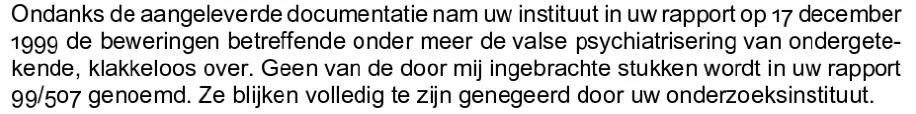

Exhibit · Letter
Giltay to the National Ombudsman, 13 March 2018
The nine grievances
“This cover-up scandal has still not been dealt with properly by the Ministry of Defence. But your organisation, too, has unfortunately given no sign to date of investigating this matter adequately. In Part I of this letter I raise nine grievances against you. I ask you to respond to each grievance on the merits.” Page 1, second paragraph of the letter. Translated from the Dutch; the original wording is below.
“Dit doofpotschandaal is nog steeds niet naar behoren behandeld door het Ministerie van Defensie. Maar ook uw organisatie heeft — helaas — tot heden geen blijk gegeven van het deugdelijk onderzoeken van deze zaak. In deel I van deze brief kom ik met negen grieven aan uw adres. Ik verzoek u per grief inhoudelijk te reageren.” Original wording

The ignored evidence
“On 21 September 1999 I delivered a letter in person at your office, intended for your predecessor, mr. dr. Marten Oosting. As enclosures, this letter contained, among other things, seven documents, all of which show that the undersigned is by no means suffering from mental disorders. […] Despite the documentation supplied, your institute, in your report of 17 December 1999, uncritically adopted the claims concerning, among other things, the false psychiatrisation of the undersigned. None of the documents I submitted is mentioned in your report 99/507. They turn out to have been completely ignored by your investigative institute.” Page 4, grievance 3. The ellipsis […] stands for the sentence about the receipt, exhibit 3 to the letter. The seven documents are listed on page 16, as exhibits 4 to 10. Translated from the Dutch; the original wording is below.
“Op 21 september 1999 gaf ik op uw kantoor in persoon een brief af bestemd voor uw voorganger mr. dr. Marten Oosting. Als bijlagen bevatte deze brief onder meer een zevental documenten die allemaal aantonen dat er bij ondergetekende allerminst sprake is van psychische stoornissen. […] Ondanks de aangeleverde documentatie nam uw instituut in uw rapport op 17 december 1999 de beweringen betreffende onder meer de valse psychiatrisering van ondergetekende, klakkeloos over. Geen van de door mij ingebrachte stukken wordt in uw rapport 99/507 genoemd. Ze blijken volledig te zijn genegeerd door uw onderzoeksinstituut.” Original wording

Why this document matters
In 2018, after the judicial rehabilitation, Giltay put nine specific grievances to the National Ombudsman, backed up by a dossier of 19 exhibits. This is the letter in which he did so; in it he asks for a reply on the merits, grievance by grievance. The letter also records that he had earlier delivered copies of his book to the Ombudsman’s office, partly at the request of a member of its own staff. In his reply of 10 April 2018, a one-page letter, the Ombudsman did not address the grievances on the merits: he saw no reason to revisit the position taken earlier and ended the correspondence.
Provenance
- Document
- Letter, 16 pages, in two parts, with 19 exhibits
- From
- Edwin Giltay, The Hague
- To
- The National Ombudsman, Mr Reinier van Zutphen, Bezuidenhoutseweg 151, The Hague
- Date
- 13 March 2018
- Subject
- Part I: nine grievances about the National Ombudsman · Part II: two new complaints about the Ministry of Defence
- Delivery
- Marked “in persoon afgegeven tegen bewijs van ontvangst” (‘delivered in person against proof of receipt’)
- Enclosures
- 19 exhibits, listed on page 16
- Copy to
- Y. Moszkowicz, Utrecht
- Redactions
- The signature on page 15 and names of third parties on pages 3, 4, 8, 10, 11, 13, 14 and 16 are blacked out in this copy
- References
- Answered by the National Ombudsman in a letter of 10 April 2018
- Language
- Dutch
- Held by
- Author’s archive
Cited in: the essay ‘The Ban Fell, the Book Stood’ in the chapters (7) ‘Never a Substantive Answer’ and (9) ‘Preserved Forever’.
Exhibit page: https://
Document: https://
Last modified 13 September 2026, accessed 26 November 2026.

This page is an exhibit to the book The Cover-up General by Edwin Giltay and its accompanying website.